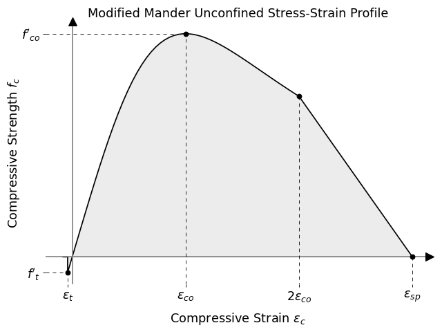
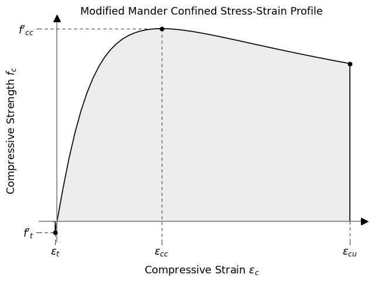

concreteproperties.stress_strain_profile.ModifiedMander#
- class ModifiedMander(elastic_modulus, compressive_strength, tensile_strength, sect_type=None, conc_confined=False, conc_tension=False, conc_spalling=False, eps_co=0.002, eps_c_max_unconfined=0.004, eps_sp=0.006, d=None, b=None, long_reinf_area=None, w_dash=None, cvr=None, trans_spacing=None, trans_d_b=None, trans_num_d=None, trans_num_b=None, trans_f_y=None, eps_su=None, n_points=50, n_steel_strain=0.6, n_confinement=0.75)[source]#
Bases:
ConcreteServiceProfileClass for a non-linear stress-strain relationship based on the Mander stress-strain model for confined & unconfined concrete for a rectangular cross section. Intended for use with moment-curvature analyses with rectangular or circular cross sections.
Refer to references 1 2 3 for further information on the Mander stress-strain models for confined and unconfined concrete.
This stress strain relationship has been specifically modified for use as per the modified implementation documented within the NZSEE C5 assessment guidelines. However input parameters can also be customised to suit other implementations if desired.
Tip
Optional input variables are only required for defining a confined concrete stress-strain relationship. Note if any variables are missed when attempting to define a confined concrete stress-strain relationship (using
conc_confined=True), then the material will default to being defined as an unconfined concrete stress-strain relationship with a warning given.Modifications to Mander confined concrete model:-
The original formulation of the expression for confined concrete presented by Mander et al. 1 can predict high levels of confined concrete strain dependant on the assumed value for the ultimate steel strain for the transverse reinforcement. The modified expression given the NZSEE C5 assesment guidelines 3 provides a correction and is directly implemented in the
ModifiedMandermaterial class.These corrections to avoid overestimating the confined concrete limiting strain consist of three allowances:-
Modifying the maximum steel strain by a factor of 0.6:-
\(\varepsilon_{s,max}= 0.6\varepsilon_{su} \leq 0.06\)
Note this 0.6 modifier can be altered via the
n_steel_strainparameter.Note the steel material used for reinforcement is also required to be defined with this same limiting fracture strain for a moment-curvature analysis.
Modifying the volumetric ratio of confinement reinforcement by a factor of 0.75. i.e.:-
For rectangular sections
\(\displaystyle{\rho_{st}=\frac{0.75}{s}\left[\frac{A_{v,d}} {b_{core}}+\frac{A_{v,b}}{d_{core}}\right]}\)
For circular sections
\(\displaystyle{\rho_{st}=\frac{0.75}{s}\frac{4A_v}{d_s}}\)
Note this 0.75 modifier can be altered via the
n_confinementparameter.
For confined concrete utilising a maximum concrete compressive strain of:-
\(\displaystyle{\varepsilon_{c,max}=0.004+\frac{0.6\rho_{st}f_{yh} \varepsilon_{su}}{f'_{cc}}\leq0.05}\)
Note that the 0.6 factor applied to the ultimate tensile failure strain can be modified as noted above.
(Source code, png, hires.png, pdf)
ModifiedMander Parameters for Unconfined Concrete#
(Source code, png, hires.png, pdf)
ModifiedMander Parameters for Confined Concrete#
- 1(1,2)
Theoretical Stress-Strain Model For Confined Concrete - Mander, Priestley, Park (1988)
- 2
Observed Stress-Strain Behavior of Confined Concrete - Mander, Priestley, Park (1988)
- 3(1,2)
NZSEE C5 Assessment Guidelines - Part C5 - Concrete Buildings - Technical Proposal to Revise the Engineering Assessment Guidelines (2018)
- Parameters
elastic_modulus (
float) – Concrete elastic modulus (\(E_c\))compressive_strength (
float) – Concrete compressive strength (\(f'_c\))tensile_strength (
float) – Concrete tensile strength (\(f_t\))sect_type (
Optional[str], default:None) –The type of concrete cross section for which to create a confined concrete stress-strain relationship for:-
rect = Rectangular section with closed stirrup/tie transverse reinforcement
circ_hoop = Circular section with closed hoop transverse reinforcement
circ_spiral = Circular section with spiral transverse reinforcement
conc_confined (
bool, default:False) – True to return a confined concrete stress-strain relationship based on provided reinforcing parameters, False to return an unconfined concrete stress-strain relationshipconc_tension (
bool, default:False) – True to include tension in the concrete within the stress-strain relationship (up to the tensile strength of the concrete is reached), False to not consider any tension behaviour in the concreteconc_spalling (
bool, default:False) – True to consider the spalling effect for unconfined concrete, False to not consider the spalling branch and truncate the unconfined concrete curve at min(\(2 \varepsilon_{co},\varepsilon_{c,max}\))eps_co (
float, default:0.002) – Strain at which the maximum concrete stress is obtained for an unconfined concrete material (\(\varepsilon_{co}\))eps_c_max_unconfined (
float, default:0.004) – Maximum strain that is able to be supported within unconfined concrete (\(\varepsilon_{c,max}\))eps_sp (
float, default:0.006) – Spalling strain, the strain at which the stress returns to zero for unconfined concrete (\(\varepsilon_{sp}\))d (
Optional[float], default:None) – Depth of a rectangular concrete cross section, or diameter of circular concrete cross section (\(d\))b (
Optional[float], default:None) – Breadth of a rectangular concrete cross section (\(b\))long_reinf_area (
Optional[float], default:None) – Total area of the longitudinal reinforcement in the concrete cross section (\(A_{st}\))w_dash (
Optional[List[float]], default:None) – List of clear spacing between longitudinal reinforcement around the full perimeter of a rectangular concrete cross section (\(w'\))cvr (
Optional[float], default:None) – Concrete cover (to confining reinforcement)trans_spacing (
Optional[float], default:None) – Spacing of transverse confining reinforcement (\(s\))trans_d_b (
Optional[float], default:None) – Diameter of the transverse confining reinforcement (\(d_b\))trans_num_d (
Optional[int], default:None) – Number of legs/cross links parallel to the depth of a rectangular concrete cross sectiontrans_num_b (
Optional[int], default:None) – Number of legs/cross links parallel to the breadth of a rectangular concrete cross sectiontrans_f_y (
Optional[float], default:None) – Yield strength of the transverse confining reinforcement (\(f_{yh}\))eps_su (
Optional[float], default:None) – Strain at the ultimate tensile strength of the reinforcement (\(\varepsilon_{su}\))n_points (
int, default:50) – Number of points to discretise the compression part of the stress-strain curve between \(\varepsilon_{c}=0\) & \(\varepsilon_{c} =2\varepsilon_{co}\) for an unconfined concrete, or between \(\varepsilon_{c}=0\) & \(\varepsilon_{c}=\varepsilon_{cu}\) for a confined concreten_steel_strain (
float, default:0.6) – Modifier for maximum steel reinforcement strain. Steel reinforcement material within the concrete cross section should also be defined with the same limit for the fracture strainn_confinement (
float, default:0.75) – Modifier for volumetric ratio of confinement reinforcement
- Raises
ValueError – If specified section type is not rect, circ_hoop or circ_spiral
Methods
Returns the most positive stress.
Returns the elastic modulus of the stress-strain profile.
Returns a stress given a strain.
Returns the most negative stress.
Returns the largest strain.
Returns the largest tensile strain.
Returns an ordered list of unique strains.
Returns the yield strength of the stress-strain profile.
Plots the stress-strain profile.
Prints the stress-strain profile properties to the terminal.
Attributes
bconc_confinedconc_spallingconc_tensioncvrdeps_c_max_unconfinedeps_coeps_speps_sulong_reinf_arean_confinementn_pointsn_steel_strainsect_typetrans_d_btrans_f_ytrans_num_btrans_num_dtrans_spacingultimate_strainw_dashstrainsstresseselastic_moduluscompressive_strengthtensile_strength- get_compressive_strength()#
Returns the most positive stress.
- Returns
Optional[float] – Compressive strength
- get_elastic_modulus()#
Returns the elastic modulus of the stress-strain profile.
- Returns
float– Elastic modulus
- get_stress(strain)#
Returns a stress given a strain.
- Parameters
strain (
float) – Strain at which to return a stress.- Returns
float– Stress
- get_tensile_strength()#
Returns the most negative stress.
- Returns
Optional[float] – Tensile strength
- get_ultimate_compressive_strain()#
Returns the largest strain.
- Returns
float– Ultimate strain
- get_ultimate_tensile_strain()#
Returns the largest tensile strain.
- Returns
float– Ultimate strain
- get_unique_strains()#
Returns an ordered list of unique strains.
- Returns
List[float] – Ordered list of unique strains
- get_yield_strength()#
Returns the yield strength of the stress-strain profile.
- Returns
float– Yield strength
- plot_stress_strain(title='Stress-Strain Profile', fmt='o-', **kwargs)#
Plots the stress-strain profile.
- Parameters
title (
str, default:'Stress-Strain Profile') – Plot titlefmt (
str, default:'o-') – Plot format stringkwargs – Passed to
plotting_context()
- Returns
Axes– Matplotlib axes object
- print_properties(fmt='8.6e')#
Prints the stress-strain profile properties to the terminal.
- Parameters
fmt (
str, default:'8.6e') – Number format
{kind=link}
{kind=link}
{kind=link}
{kind=link}